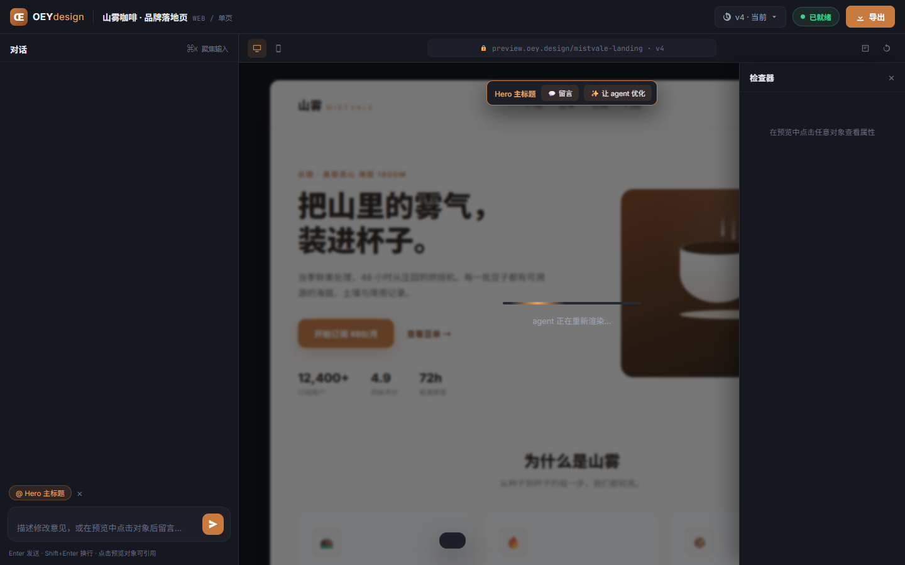

A baseline 自由生成
对照组。当前做法：把 brief 直接交给 agent，不加任何审美约束。
A1
| 锚点 section/object | 10 / 17 | console error | 0 |
| 实际用到的颜色数 | 31 | 字号阶数 | 21 |
| 字体族 | -apple-system, BlinkMacSystemFont, "Segoe UI", "PingFang SC", "Hiragino Sans GB", "Microsoft YaHei", sans-serif, ui-monospace, Menlo, monospace | ||
| 最宽三块宽度 | 1440px / 360px / 359px | 被阻断的外链 | 0 |
| 生成耗时 | 568.2s | 总 token | 21944 |
| 文件 | app.js, index.html, styles.css | ||

A2
| 锚点 section/object | 6 / 16 | console error | 0 |
| 实际用到的颜色数 | 23 | 字号阶数 | 27 |
| 字体族 | "JetBrains Mono", monospace, Inter, "Noto Sans SC", sans-serif, Inter, "Noto Sans SC", system-ui, sans-serif | ||
| 最宽三块宽度 | 1440px / 1440px / 380px | 被阻断的外链 | 0 |
| 生成耗时 | 274.4s | 总 token | 11387 |
| 文件 | index.html, styles.css | ||
